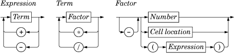

The Cell class is derived from QTableWidgetItem. The class is designed to work well with Spreadsheet, but it has no specific dependencies on that class and could in theory be used in any QTableWidget. Here's the header file:
#ifndef CELL_H
#define CELL_H
#include <QTableWidgetItem>
class Cell : public QTableWidgetItem
{
public:
Cell();
QTableWidgetItem *clone() const;
void setData(int role, const QVariant &value);
QVariant data(int role) const;
void setFormula(const QString &formula);
QString formula() const;
void setDirty();
private:
QVariant value() const;
QVariant evalExpression(const QString &str, int &pos) const;
QVariant evalTerm(const QString &str, int &pos) const;
QVariant evalFactor(const QString &str, int &pos) const;
mutable QVariant cachedValue;
mutable bool cacheIsDirty;
};
#endif
The Cell class extends QTableWidgetItem by adding two private variables:
cachedValue caches the cell's value as a QVariant.
cacheIsDirty is true if the cached value isn't up-to-date.
We use QVariant because some cells have a double value, while others have a QString value.
The cachedValue and cacheIsDirty variables are declared with the C++ mutable keyword. This allows us to modify these variables in const functions. Alternatively, we could recalculate the value each time text() is called, but that would be needlessly inefficient.
Notice that there is no Q_OBJECT macro in the class definition. Cell is a plain C++ class, with no signals or slots. In fact, because QTableWidgetItem isn't derived from QObject, we cannot have signals and slots in Cell as it stands. Qt's item classes are not derived from QObject to keep their overhead to the barest minimum. If signals and slots are needed, they can be implemented in the widget that contains the items or, exceptionally, using multiple inheritance with QObject.
Here's the start of cell.cpp:
#include <QtGui>
#include "cell.h"
Cell::Cell()
{
setDirty();
}In the constructor, we only need to set the cache as dirty. There is no need to pass a parent; when the cell is inserted into a QTableWidget with setItem(), the QTableWidget will automatically take ownership of it.
Every QTableWidgetItem can hold some data, up to one QVariant for each data "role". The most commonly used roles are Qt::EditRole and Qt::DisplayRole. The edit role is used for data that is to be edited, and the display role is for data that is to be displayed. Often the data for both is the same, but in Cell the edit role corresponds to the cell's formula and the display role corresponds to the cell's value (the result of evaluating the formula).
QTableWidgetItem *Cell::clone() const
{
return new Cell(*this);
}The clone() function is called by QTableWidget when it needs to create a new cell—for example, when the user starts typing into an empty cell that has not been used before. The instance passed to QTableWidget::setItemPrototype() is the item that is cloned. Since member-wise copying is sufficient for Cell, we are relying on the default copy constructor automatically created by C++ to create new Cell instances in the clone() function.
void Cell::setFormula(const QString &formula)
{
setData(Qt::EditRole, formula);
}The setFormula() function sets the cell's formula. It is simply a convenience function for calling setData() with the edit role. It is called from Spreadsheet::setFormula().
QString Cell::formula() const
{
return data(Qt::EditRole).toString();
}The formula() function is called from Spreadsheet::formula(). Like setFormula(), it is a convenience function, this time retrieving the item's EditRole data.
void Cell::setData(int role, const QVariant &value)
{
QTableWidgetItem::setData(role, value);
if (role == Qt::EditRole)
setDirty();
}If we have a new formula, we set cacheIsDirty to true to ensure that the cell is recalculated the next time text() is called.
There is no text() function defined in Cell, although we call text() on Cell instances in Spreadsheet::text(). The text() function is a convenience function provided by QTableWidgetItem; it is the equivalent of calling data(Qt::DisplayRole).toString().
void Cell::setDirty()
{
cacheIsDirty = true;
}The setDirty() function is called to force a recalculation of the cell's value. It simply sets cacheIsDirty to true, meaning that cachedValue is no longer up-to-date. The recalculation isn't performed until it is necessary.
QVariant Cell::data(int role) const
{
if (role == Qt::DisplayRole) {
if (value().isValid()) {
return value().toString();
} else {
return "####";
}
} else if (role == Qt::TextAlignmentRole) {
if (value().type() == QVariant::String) {
return int(Qt::AlignLeft | Qt::AlignVCenter);
} else {
return int(Qt::AlignRight | Qt::AlignVCenter);
}
} else {
return QTableWidgetItem::data(role);
}
}The data() function is reimplemented from QTableWidgetItem. It returns the text that should be shown in the spreadsheet if called with Qt::DisplayRole, and the formula if called with Qt::EditRole. It returns a suitable alignment if called with Qt::TextAlignmentRole. In the DisplayRole case, it relies on value() to compute the cell's value. If the value is invalid (because the formula is wrong), we return "####".
The Cell::value() function used in data() returns a QVariant. A QVariant can store values of different types, such as double and QString, and provides functions to convert the variant to other types. For example, calling toString() on a variant that holds a double value produces a string representation of the double. A QVariant constructed using the default constructor is an "invalid" variant.
const QVariant Invalid;
QVariant Cell::value() const
{
if (cacheIsDirty) {
cacheIsDirty = false;
QString formulaStr = formula();
if (formulaStr.startsWith('\'')) {
cachedValue = formulaStr.mid(1);
} else if (formulaStr.startsWith('=')) {
cachedValue = Invalid;
QString expr = formulaStr.mid(1);
expr.replace(" ", "");
expr.append(QChar::Null);
int pos = 0;
cachedValue = evalExpression(expr, pos);
if (expr[pos] != QChar::Null)
cachedValue = Invalid;
} else {
bool ok;
double d = formulaStr.toDouble(&ok);
if (ok) {
cachedValue = d;
} else {
cachedValue = formulaStr;
}
}
}
return cachedValue;
}
The value() private function returns the cell's value. If cacheIsDirty is true, we need to recalculate the value.
If the formula starts with a single quote (e.g., "'12345"), the single quote occupies position 0 and the value is the string from position 1 to the end.
If the formula starts with an equals sign ('='), we take the string from position 1 and remove any spaces it may contain. Then we call evalExpression() to compute the value of the expression. The pos argument is passed by reference; it indicates the position of the character where parsing should begin. After the call to evalExpression(), the character at position pos should be the QChar::Null character we appended, if it was successfully parsed. If the parse failed before the end, we set cachedValue to be Invalid.
If the formula doesn't begin with a single quote or an equals sign, we attempt to convert it to a floating-point value using toDouble(). If the conversion works, we set cachedValue to be the resulting number; otherwise, we set cachedValue to be the formula string. For example, a formula of "1.50" causes toDouble() to set ok to true and return 1.5, while a formula of "World Population" causes toDouble() to set ok to false and return 0.0.
By giving toDouble() a pointer to a bool, we are able to distinguish between the conversion of a string that represents the numeric value 0.0 and a conversion error (where 0.0 is also returned but the bool is set to false). Sometimes the returning of a zero value on conversion failure is exactly what we need, in which case we do not bother passing a pointer to a bool. For performance and portability reasons, Qt never uses C++ exceptions to report failure. This doesn't prevent you from using them in Qt programs if your compiler supports them.
The value() function is declared const. We had to declare cachedValue and cacheIsValid as mutable variables so that the compiler will allow us to modify them in const functions. It might be tempting to make value() non-const and remove the mutable keywords, but that would not compile because we call value() from data(), a const function.
_________________________________________________________________
We have now completed the Spreadsheet application, apart from parsing formulas. The rest of this section covers evalExpression() and the two helper functions evalTerm() and evalFactor(). The code is a bit complicated, but it is included here to make the application complete. Since the code is not related to GUI programming, you can safely skip it and continue reading from Chapter 5.
The evalExpression() function returns the value of a spreadsheet expression. An expression is defined as one or more terms separated by '+' or '-' operators. The terms themselves are defined as one or more factors separated by '*' or '/' operators. By breaking down expressions into terms and terms into factors, we ensure that the operators are applied with the correct precedence.
For example, "2*C5+D6" is an expression with "2*C5" as its first term and "D6" as its second term. The term "2*C5" has "2" as its first factor and "C5" as its second factor, and the term "D6" consists of the single factor "D6". A factor can be a number ("2"), a cell location ("C5"), or an expression in parentheses, optionally preceded by a unary minus.
The syntax of spreadsheet expressions is defined in Figure 4.10. For each symbol in the grammar (Expression, Term, and Factor), there is a corresponding member function that parses it and whose structure closely follows the grammar. Parsers written this way are called recursive-descent parsers.

Let's start with evalExpression(), the function that parses an Expression:
QVariant Cell::evalExpression(const QString &str, int &pos) const
{
QVariant result = evalTerm(str, pos);
while (str[pos] != QChar::Null) {
QChar op = str[pos];
if (op != '+' && op != '-')
return result;
++pos;
QVariant term = evalTerm(str, pos);
if (result.type() == QVariant::Double
&& term.type() == QVariant::Double) {
if (op == '+') {
result = result.toDouble() + term.toDouble();
} else {
result = result.toDouble() - term.toDouble();
}
} else {
result = Invalid;
}
}
return result;
}
First, we call evalTerm() to get the value of the first term. If the following character is '+' or '-', we continue by calling evalTerm() a second time; otherwise, the expression consists of a single term, and we return its value as the value of the whole expression. After we have the value of the first two terms, we compute the result of the operation, depending on the operator. If both terms evaluated to a double, we compute the result as a double; otherwise, we set the result to be Invalid.
We continue like this until there are no more terms. This works correctly because addition and subtraction are left-associative; that is, "1-2-3" means "(1-2)-3", not "1-(2-3)".
QVariant Cell::evalTerm(const QString &str, int &pos) const
{
QVariant result = evalFactor(str, pos);
while (str[pos] != QChar::Null) {
QChar op = str[pos];
if (op != '*' && op != '/')
return result;
++pos;
QVariant factor = evalFactor(str, pos);
if (result.type() == QVariant::Double
&& factor.type() == QVariant::Double) {
if (op == '*') {
result = result.toDouble() * factor.toDouble();
} else {
if (factor.toDouble() == 0.0) {
result = Invalid;
} else {
result = result.toDouble() / factor.toDouble();
}
}
} else {
result = Invalid;
}
}
return result;
}
The evalTerm() function is very similar to evalExpression(), except that it deals with multiplication and division. The only subtlety in evalTerm() is that we must avoid division by zero, since it is an error on some processors. While it is generally inadvisable to test floating-point values for equality because of rounding errors, it is safe to test for equality against 0.0 to prevent division by zero.
QVariant Cell::evalFactor(const QString &str, int &pos) const
{
QVariant result;
bool negative = false;
if (str[pos] == '-') {
negative = true;
++pos;
}
if (str[pos] == '(') {
++pos;
result = evalExpression(str, pos);
if (str[pos] != ')')
result = Invalid;
++pos;
} else {
QRegExp regExp("[A-Za-z][1-9][0-9]{0,2}");
QString token;
while (str[pos].isLetterOrNumber() || str[pos] == '.') {
token += str[pos];
++pos;
}
if (regExp.exactMatch(token)) {
int column = token[0].toUpper().unicode() - 'A';
int row = token.mid(1).toInt() - 1;
Cell *c = static_cast<Cell *>(
tableWidget()->item(row, column));
if (c) {
result = c->value();
} else {
result = 0.0;
}
} else {
bool ok;
result = token.toDouble(&ok);
if (!ok)
result = Invalid;
}
}
if (negative) {
if (result.type() == QVariant::Double) {
result = -result.toDouble();
} else {
result = Invalid;
}
}
return result;
}
The evalFactor() function is a bit more complicated than evalExpression() and evalTerm(). We start by noting whether the factor is negated. We then see if it begins with an open parenthesis. If it does, we evaluate the contents of the parentheses as an expression by calling evalExpression(). When parsing a parenthesized expression, evalExpression() calls evalTerm(), which calls evalFactor(), which calls evalExpression() again. This is where recursion occurs in the parser.
If the factor isn't a nested expression, we extract the next token, which should be a cell location or a number. If the token matches the QRegExp, we take it to be a cell reference and we call value() on the cell at the given location. The cell could be anywhere in the spreadsheet, and it could have dependencies on other cells. The dependencies are not a problem; they will simply trigger more value() calls and (for "dirty" cells) more parsing until all the dependent cell values are calculated. If the token isn't a cell location, we take it to be a number.
What happens if cell A1 contains the formula "=A1"? Or if cell A1 contains "=A2" and cell A2 contains "=A1"? Although we have not written any special code to detect circular dependencies, the parser handles these cases gracefully by returning an invalid QVariant. This works because we set cacheIsDirty to false and cachedValue to Invalid in value() before we call evalExpression(). If evalExpression() recursively calls value() on the same cell, it returns Invalid immediately, and the whole expression then evaluates to Invalid.
We have now completed the formula parser. It would be straightforward to extend it to handle predefined spreadsheet functions, such as "sum()" and "avg()", by extending the grammatical definition of Factor. Another easy extension is to implement the '+' operator with string operands (as concatenation); this requires no changes to the grammar.